At a glance
A machine learning model of United States county life expectancy, built only from satellite and gridded environmental data, is used to ask a question about method: when the model ranks its inputs, how much of the ranking reflects the environment, and how much reflects the summary statistic chosen to describe each field?
Every number on this page is read from the files that generate the manuscript's numbers (paper_final/constants_*.tex), and every figure caption is taken from the manuscript.
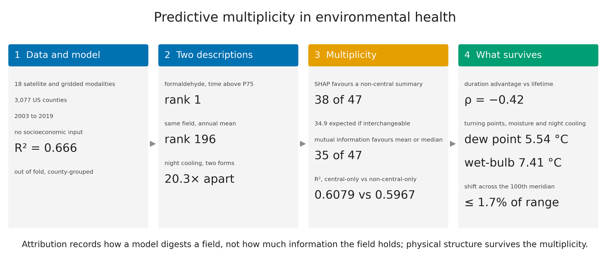
Abstract
Machine learning attribution rankings in environmental health are widely interpreted as physical discoveries; in practice, they also reflect unstated choices of summary statistics. Across 52,309 county-years in 3,077 counties of the contiguous United States (2003 to 2019), gradient-boosted trees given only satellite and gridded environmental data predicted life expectancy in unseen counties with a coefficient of determination of 0.666, yet one formaldehyde field ranked first as time above a reference level and 196th as its annual mean. Across 47 fields offering both a mean or median and another summary, Shapley additive explanations favoured the other summary in 38, about as often as a random choice among each field's summaries would (34.9 expected), whereas mutual information, which needs no model, favoured the mean or median in 35. Models built from either kind differed by 0.0112 in that coefficient: equally accurate models with different explanations. Some physical structure survives. The duration advantage correlated inversely, though not significantly, with atmospheric lifetime across 13 species, and turning points in dew point, night-time wet-bulb temperature and night cooling moved by at most 1.7% of their range across the 100th meridian. Socioeconomic variables the model never saw predicted its errors (coefficient of determination 0.44).
The idea in one picture
A satellite or reanalysis product describes each county with many values per year. A model needs one number per county and year, so the record is summarised, usually by its annual mean. The same record can also be summarised by a percentile, a spread or the share of time spent above a reference level. These are different descriptions of one measurement, not different measurements.
For one formaldehyde field, the two descriptions land at opposite ends of the model's ranking. The paper asks whether this is a general property of attribution, whether the information in the data follows the same pattern, and what in the fitted model is robust to the choice.
Data and design
We linked satellite-derived and gridded environmental measurements to life expectancy across 3,077 counties of the contiguous United States over 2003 to 2019, giving 52,309 county-year observations. The county-year is the unit of observation throughout, and every statement in this paper is a population-level association at that unit, not a statement about individuals.
The work proceeds in four stages (Figure 1). The first acquires 18 sensing and reanalysis data sources, here called modalities, and reduces each to the county-year, emitting several summaries of every field from one pass over the same pixels. The second admits columns to modelling, fits a gradient-boosted model under county-grouped cross-validation and attributes it. The third asks whether attribution follows the summary statistic, compares the answer with mutual information and with matched refits, and calibrates it against a null, state deletion, the admission rules and eight attribution instruments. The fourth asks what survives: whether atmospheric lifetime tracks the duration advantage, which turning points pass a stability criterion fixed in advance and whether they hold across climate regions, and the structure of the model's error.
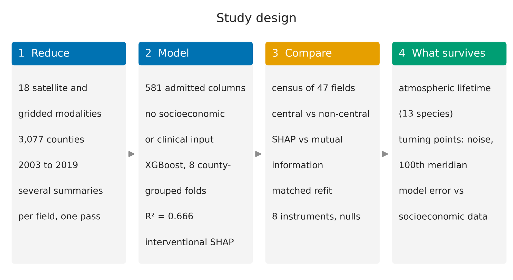
Outcome
The outcome is county life expectancy at birth, from the small-area estimates of the Institute for Health Metrics and Evaluation (IHME) for 2000 to 2019. Life expectancy at birth is the average number of years a newborn would live if the death rates at each age seen in that county and year held for its whole life. These estimates borrow strength across neighbouring counties and adjacent years, and draw on county covariates in the small-area models, to stabilise rates where annual death counts are small. The outcome surface is therefore smoother than the underlying mortality record and partly informed by county characteristics, which matters for the neighbouring-county baseline and for the audit of Section 2.12 of the paper. We do not carry its published uncertainty into the fit.
Two descriptions of one field
Because the reference is one number for the whole country and period, a given value of \(D\) means the same share of time above the same ambient level in every county. It does not record how far above the reference a county goes, and it describes an ambient field rather than what people breathe. Duration is not a rescaled mean: two counties with the same annual mean differ in \(D\) whenever one has a few severe episodes and the other a persistent moderate background. We computed it at \(K = 75\) and \(K = 90\), so every species enters the model as a concentration and as two durations.
Methods and equations
The equations below are those of the manuscript (equations 1, 2 and A1) and the standard definitions of the quantities it reports. Symbols are defined beneath each one.
Duration of a species above a national reference level
\(x_{c,i,t}(s)\) is the value of species \(c\) in county \(i\), year \(t\), at time step \(s\) of the \(S\) reanalysis time steps of the year; \(q_c^{(K)}\) is the \(K\)th percentile of that species over all counties, time steps and years; \(\mathbf{1}[\cdot]\) is one when its condition holds. \(D\) is in per cent of the year and was computed at \(K\) = 75 and 90. The concentration description is the annual mean, \(\bar x_{c,i,t} = S^{-1}\sum_s x_{c,i,t}(s)\).
Night cooling efficiency, two constructions
LST is MODIS land-surface temperature in degrees Celsius; \(p90\) and \(p10\) are the 90th and 10th percentiles of the county's pixels and \(\mu\) their mean. NCE is an index, not a fraction of heat. The two constructions correlate at 0.959 over all county-years.
Night-time wet-bulb temperature
Wet-bulb temperature is computed with the empirical formula of Stull (2011), from air temperature \(T\) (°C) and relative humidity \(RH\) (%):
For the night-time form, \(T\) is the annual-mean daily minimum temperature and the humidity is that of the minimum dew point \(T_d\), with \(RH = 100\,\exp\!\left(\tfrac{a T_d}{b + T_d}\right)\big/\exp\!\left(\tfrac{a T}{b + T}\right)\), \(a\) = 17.625 and \(b\) = 243.04 °C (as implemented in engineered_features_v2.py). The minimum dew point of a county is the annual-mean dew point of its driest 4 km PRISM cell, not the lowest daily value of the year.
Model and skill
The model is a gradient-boosted tree ensemble (XGBoost; Chen and Guestrin, 2016): a sum of \(K\) regression trees fitted in sequence, each to the errors of those before it,
where \(T_f\) is the number of leaves of tree \(f\) and \(w\) its leaf values (the standard regularised objective of XGBoost). Skill is measured on counties held out by eight-fold county-grouped cross-validation:
with \(r_i\) the residual, observed minus predicted life expectancy. The settings were fixed before this study:
| Setting | Value |
|---|---|
| Number of trees | 1500 |
| Maximum depth | 8 |
| Learning rate | 0.0138 |
| Row subsample | 0.731 |
| Column subsample per tree | 0.712 |
| Minimum child weight | 9 |
| L1 regularisation | 0.254 |
| L2 regularisation | 0.68 |
| Learner | Out-of-fold \(R^{2}\) (mean absolute error, years) |
| XGBoost | 0.666 (1.033) |
| CatBoost | 0.660 (1.046) |
Attribution: Shapley additive explanations (SHAP)
The attribution \(\phi_j\) of input \(j\) to one prediction is its Shapley value over the set of inputs \(N\):
In the interventional form \(v_{\text{int}}\), the absent inputs \(X_{\bar S}\) are drawn from a background sample independently of the present ones, so an input is credited with what the model does with it. The attributions add up to the prediction:
The main attribution is SHapley Additive exPlanations (SHAP) in its interventional tree form, TreeSHAP. A SHAP value divides one prediction among the inputs by averaging, over all orders in which inputs could be added, the change each input makes when it is added. The interventional form fills an absent input from a background sample independently of the inputs present, so an input is credited with what it adds to the prediction given the others (Appendix A). We compute the production ranking out of fold. In each of the eight folds, the fold's model attributes 4,000 county-years of its held-out counties against a background of 1,000 county-years drawn from its training counties. A column's importance is its mean absolute SHAP value, in years of life expectancy, averaged over the folds, and its rank is its place among the 581. Two later experiments attribute the model fitted to all counties on their own samples, stated where they are used. These are the recomputation described below, on 6,000 county-years and the turning points of Section 2.10 of the paper on 20,000, both against a background of 500.
Mutual information: what the data hold without a model
Mutual information measures how much knowing one variable reduces uncertainty about another, in nats:
It is zero when the two are independent and grows with any dependence, linear or not. It was estimated with the \(k\)-nearest-neighbour estimator of Kraskov, Stögbauer and Grassberger (\(k\) = 3),
where \(\psi\) is the digamma function, \(n\) the number of observations, and \(n_x\), \(n_y\) the numbers of points within each observation's \(k\)th-neighbour distance in the \(x\) and \(y\) directions. Mutual information is marginal: it scores a column alone, before any model.
The census and its reference distribution
For each comparable field the census records whether its most attributed non-central summary is attributed more than its most attributed central one, and summarises the ratio of the two by its median with a bootstrap interval. A fair coin is the wrong reference for that count. A field usually offers more non-central summaries than central ones. As a result, the best of several non-central summaries beats the best of one or two central ones more often than half the time, even if the statistic does not matter. We therefore use exchangeability as the reference. If every summary of field \(i\) were equally likely to be the most attributed, the non-central side would lead with probability \(p_i = n_i^{\text{nc}}/n_i\), the share of the field's \(n_i\) summaries that are non-central. The count over fields then follows the Poisson-binomial distribution of independent draws with those probabilities, which we compute exactly. We then compare the same two columns of each field by MI. Because that comparison is between a fixed pair, a fair coin is its correct reference, and we test it with an exact two-sided sign test.
\(n_i\) is the number of admitted summaries of field \(i\) and \(n_i^{\text{nc}}\) the number that are non-central. \(T\) follows a Poisson-binomial distribution, computed exactly; its central 95% range is 29 to 40. For the mutual-information comparison of a fixed pair, the reference is a fair coin, \(B \sim \text{Binomial}(n, \tfrac{1}{2})\), tested two-sided: \(p = \min\{1,\ 2\min[P(B \ge k),\,P(B \le k)]\}\).
Attribution divides credit, and a gap between two correlated columns could arise from the division rather than from the data. The census is therefore paired with an experiment that contains no attribution. We fit two models on the same county-years and folds, each with 47 columns: one receives each comparable field's central summary only, the other one non-central summary of the same fields. We fix the non-central summary by an order declared before any result was seen (the minimum where one exists, then the other quantiles, then spread). We then repeat the arm 5 times with the non-central summary drawn at random per field. If the two models predict equally well, the choice between the two kinds of description is free, and the fitted model's preference is one of several equally good ones.
Atmospheric lifetime
If duration carries information that concentration does not, one candidate reason is chemical. A species that is destroyed within hours rises and falls with its sources, so its annual mean averages a few large episodes with long clean periods, and the time spent above a level records the episodes directly. A species that persists for weeks is mixed into a regional background, and its mean describes that background well. Formaldehyde over the United States is produced largely in the warm season by the oxidation of isoprene emitted by vegetation, so its duration also records where and for how long that season lasts. We therefore paired every species' duration and concentration columns, 20 pairs over 13 species (Table A3; some species admitted only one of their two durations), and took the ratio of their attributions. We then tested whether the per-species median ratio falls as tropospheric lifetime rises, using lifetimes from the literature and a one-sided permutation test of Spearman's correlation over 20,000 permutations. Species, not pairs, are the unit, because the pairs of one species are not independent. We fixed in advance a boundary of 2 days between short-lived and longer-lived species, and then swept it over 7 values. We also perturbed the literature lifetimes by up to 0.5 orders of magnitude in 4,000 draws, and left each species out in turn.
Lifetime, not half-life
The atmospheric (here tropospheric) lifetime \(\tau\) of a species is the standard quantity of atmospheric chemistry: its burden divided by its removal rate, the e-folding time of its decay when sources stop. For removal by the hydroxyl radical, \(\tau = 1/(k_{\text{OH}}[\text{OH}])\). A half-life, the term of radioactive decay, is \(t_{1/2} = \tau\ln 2 \approx 0.69\,\tau\). The paper uses lifetimes from the literature (Seinfeld and Pandis; Atkinson and Arey; and others cited there).
The test statistic is Spearman's rank correlation, the Pearson correlation of ranks, \(\rho = \text{corr}\bigl(\text{rank}(\tau_c), \text{rank}(R_c)\bigr)\), between the lifetime \(\tau_c\) and the median duration-to-concentration importance ratio \(R_c\) of species \(c\). Its one-sided \(p\) value is the share of 20,000 random permutations of the ratios that give a correlation at least as negative as the observed one.
Turning points and the stability rule
A turning point is the value of a variable at which its contribution to the prediction changes sign. We locate it on the attribution curve, the plot of a variable's SHAP value against its own value, because that curve holds the other variables' contributions apart. We use a sample of 20,000 county-years, attributed by the model fitted to all counties against a background of 500 county-years. We place the observations in 45 equal-count bins of the variable between its 1st and 99th percentiles and take the median attribution in each bin. The located value is where the binned curve crosses zero, and where it crosses more than once we take the steepest crossing. SHAP values are centred at the expected prediction, \(\mathbb{E}[f(X)]\), which here is 77.2 years. A zero-crossing therefore denotes the threshold at which a variable's contribution changes from raising predicted county life expectancy above that level to lowering it below, or the reverse. It marks a change in the sign of a contribution, not by itself a transition from a protective to a harmful exposure. Under the interventional form, a variable's attributions average to zero over the background sample, so the crossing of a monotone curve falls where the variable's contribution equals its average, near the middle of its distribution. We report with each located value the share of county-years above it.
Any estimator returns a number for any curve, including a flat one, so we fixed the criterion for believing a located value before any estimate was seen. A candidate is stable only if it meets three conditions over 5,000 bootstrap resamples of the county-years. A crossing must be found in at least 60% of resamples. The interval between the 2.5th and 97.5th percentiles of the located values must be narrower than 40% of the variable's observed range, and the full-sample value must lie inside that interval. We put eleven candidates through the criterion: the three nocturnal descriptions of moisture and cooling, their mean-form and warm-hour relatives, night-time surface temperature, minimum temperature, and the leading composition and land-use variables.
\(\tilde m(x)\) is the median SHAP value in 45 equal-count bins of the variable between its 1st and 99th percentiles, and the quantiles are taken over 5,000 bootstrap resamples of the county-years.
Residual geography and the socioeconomic audit
Here \(\bar r_i\) is the out-of-fold residual averaged within county \(i\), \(\bar r\) its average over counties, and \(w_{ij}\) the spatial weights of the four-nearest-neighbour graph. For the six pre-declared indicators, the Holm-adjusted \(p\) value of the \(k\)th smallest of \(m\) = 6 is \(\tilde p_{(k)} = \max_{j \le k} \min\{1,\,(m - j + 1)\,p_{(j)}\}\).
We averaged the out-of-fold residual (observed minus predicted life expectancy) within each county and measured its spatial structure by Moran's \(I\) against 999 permutations. Moran's \(I\) is near zero when a county's residual says nothing about those of its four nearest neighbours. We then predicted the county residual from the 314 socioeconomic columns with a histogram gradient-boosting learner under eight folds grouped by state. We gave the 581 environmental columns the model had used the same task, with the same learner and folds. Some County Health Rankings columns describe health behaviour and health status (smoking, obesity, physical inactivity) rather than socioeconomic conditions. We therefore repeated the audit without the County Health Rankings columns (298 remain) and with the American Community Survey columns alone. We named six indicators in advance (poverty, median household income, unemployment, uninsurance, bachelor's degree attainment and disability) and corrected their Spearman rank correlations with the residual for multiple testing by the Holm procedure. The audit asks only whether the model's error is socioeconomic; combining the two kinds of data in one model is a different question that this paper does not address.
Results
A model worth interrogating
From the physical environment alone, the model predicted county life expectancy with out-of-fold \(R^{2}\) = 0.666 (95% interval 0.661 to 0.672) and a mean absolute error of 1.033 years (Figure 2A). It beat every baseline on identical folds, including the four nearest counties' own life expectancy (0.642), which is given the outcome the model never sees. Holding out whole states lowered skill to 0.509, which is the figure that applies to prediction in a region the model has not visited. CatBoost reached 0.660, so the choice of learner moves skill by less than one hundredth.
The skill rises steeply with the number of counties seen and has nearly levelled off: 0.476 with a tenth of the counties, 0.660 with all of them, and 0.024 gained over the final quarter (Figure 2B). Error is concentrated in the shortest-lived counties, 6.56 years in the 153 county-years with life expectancy of 60 to 70 years against 0.83 in the populous middle of the distribution (Figure 2C). Shuffling the years within each county left skill at 0.632, while swapping whole series between counties removed it (−0.066). Almost all of what the model explains is the difference between counties, not the trajectory of one county through time (Figure 2D). The temporal checks agree. Leaving one year out gave a mean \(R^{2}\) of 0.974, and forward chaining over 14 steps gave 0.940, rising slowly from 0.912 to 0.952. Both keep every county in training, so they measure how faithfully a county's environment tracks its own level rather than skill on new counties.
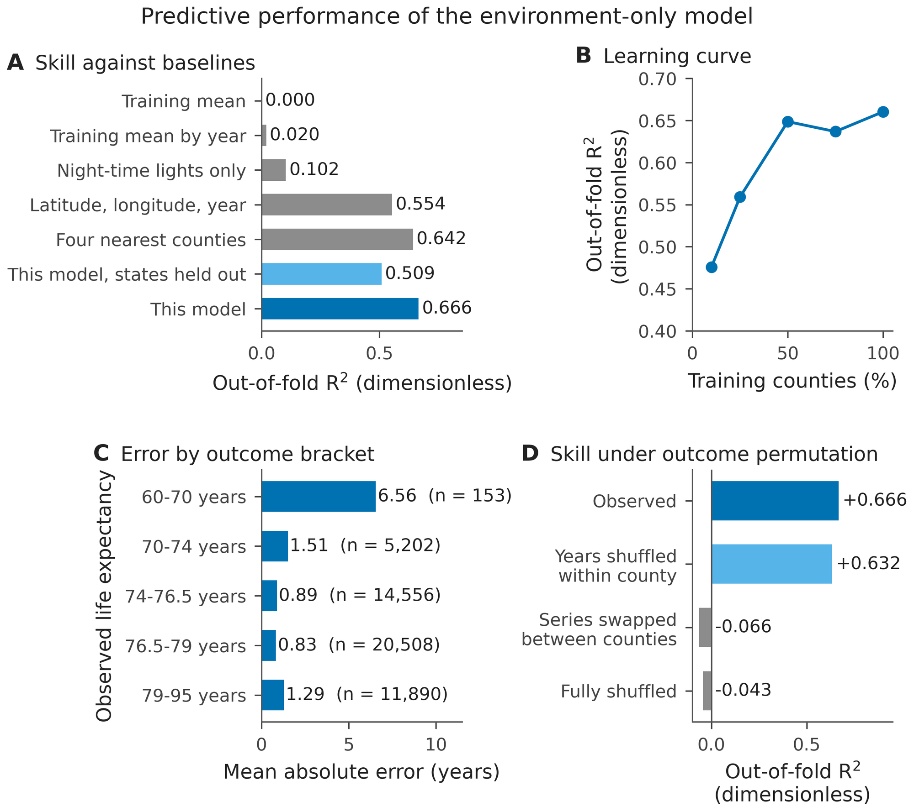
One field, two descriptions
The leading variable of the fitted model is the share of the year a county spends above the national 75th percentile of formaldehyde, with a mean absolute attribution of 0.3407 years. The annual mean of the same field from the same product ranks 196th of 581, at 0.004830 years, 70.5 times smaller (Figure 3A). The two constructions of night cooling efficiency, built from one MODIS product and correlated at 0.959, rank 2nd and 133rd, a factor of 20.3 (Figure 3B,D). In the full ranking each description sits in a different part of the curve: one among the handful of variables carrying most of the attribution, the other in the long tail (Figure 3C).
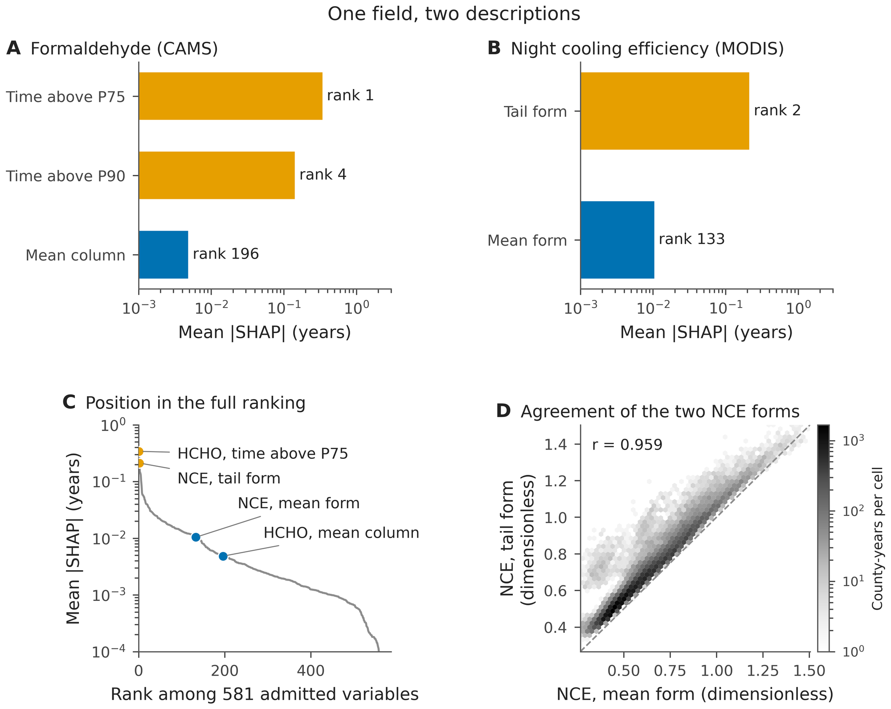
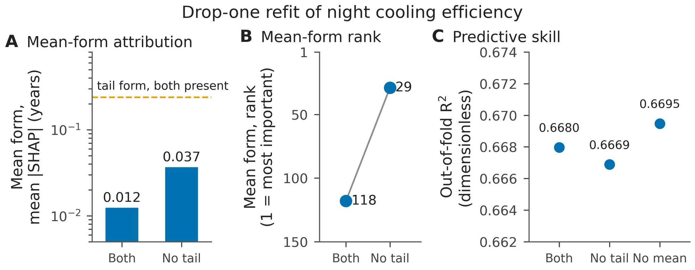
Attribution follows the description; information does not
Two cases do not make a general effect, so we put the same question to every field with several summaries. Within a field, the most and the least attributed summaries differed by a median factor of 3.4 and by up to 93-fold. Across all 55 multi-summary fields (including the 8 that lack a central summary), the most attributed summary was an extreme quantile in 27, a measure of spread in 19 and a mean or median in only 9.
In 38 of the 47 comparable fields, the best non-central summary was attributed more than the best central one (Figure 5A), by a median factor of 1.55 (95% interval 1.30 to 2.27). Against a fair coin that count would look decisive, but on average 74% of a field's summaries are non-central. If every summary were equally likely to be the one attributed most, 34.9 fields would favour a non-central summary (95% range 29 to 40), and the observed 38 is within that range (one-sided \(p\) = 0.20). In aggregate, the count is consistent with a draw among each field's summaries; on its own it cannot show that the choice is random.
Mutual information does not behave that way (Figure 5B). For the same two summaries of each field, the non-central one carried more information about life expectancy in only 12 of the 47 fields. The central one did so in 35 (two-sided sign test \(p\) = 0.001), with a median ratio of 0.76. The two instruments named the same leader in 19 fields, fewer than half. Measured without a model, the data hold more information in the mean, and the summary the model credits most is usually the less informative one on its own.
The matched refit shows what the model makes of that information (Figure 5C). Given only the central summary of each field, the model reached \(R^{2}\) = 0.6079; given only a non-central summary of the same fields, 0.5967, a difference of 0.0112. Drawing the non-central summary at random for each field, 5 times, gave 0.5960 to 0.6116, a range that contains both. The two models are near-equivalent members of one Rashomon set.
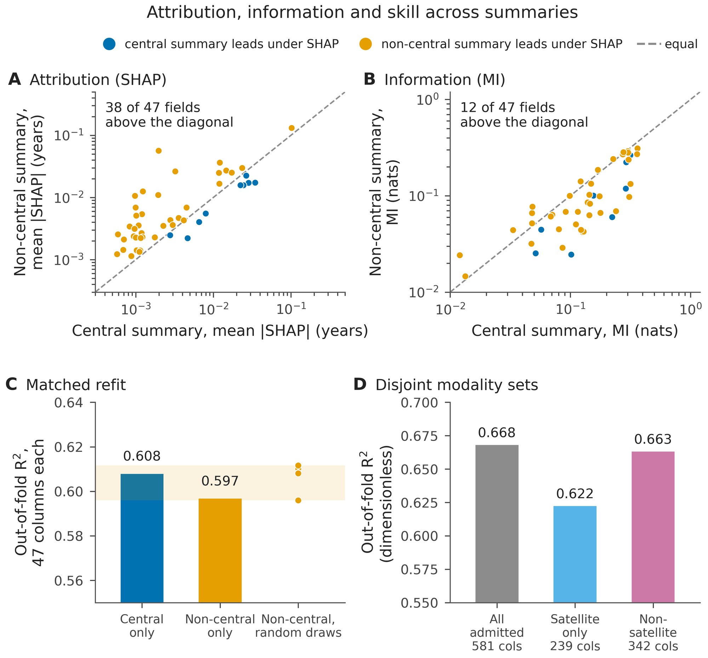
A stable pattern, not an accident of the analysis
Four decomposition instruments and total split gain gave counts in the same range (Figure 6A, Table A2). The counts were 38 of 47 under interventional SHAP as published and 33 when recomputed, 35 under path-dependent TreeSHAP, 35 when every row was attributed out of fold, and 32 under total split gain. Every one lies inside the range expected if summaries were interchangeable. Attribution computed on rows the model never saw gave the same answer as attribution on its training rows, so the pattern is not an artefact of in-sample fitting.
Removing one state at a time from the attributed sample moved the count only between 33 and 35 (from 34 on the jackknife's own attributed sample; Figure 6B), so no single state drives it. The share of fields in which a non-central summary was attributed more did not differ between the two halves of the period (Fisher \(p\) = 0.81). Across the 40 placements of the admission rules, which admitted between 200 and 720 columns, the non-central summary led in 73% to 84% of countable fields (Figure 6C). Every coverage threshold between 0.881 and 0.982 admitted the identical set. Without the protected exemption, 545 columns are modelled, 43 of the 47 census fields remain, and the formaldehyde duration pair is broken. Restricted to the 8 fields whose two compared summaries are both protected, which no ordering of the correlation filter can alter, the non-central summary led in all 8.
Loss-based permutation importance did not give a stable answer. Across 5 county-disjoint held-out splits, every fit predicted well (held-out \(R^{2}\) 0.631 to 0.663 for the production learner and 0.630 to 0.655 for the second). The production learner favoured the non-central summary in 25 to 31 fields and the second learner in 24 to 30. The count moved by up to 6 fields from one split to another and fell below the range expected for interchangeable summaries (29 to 40) in 3 of 5 splits for the production learner and 3 for the second, and never above it, the opposite direction from decomposition. Section 4.2 of the paper explains why this instrument cannot settle a comparison between correlated descriptions of one field.
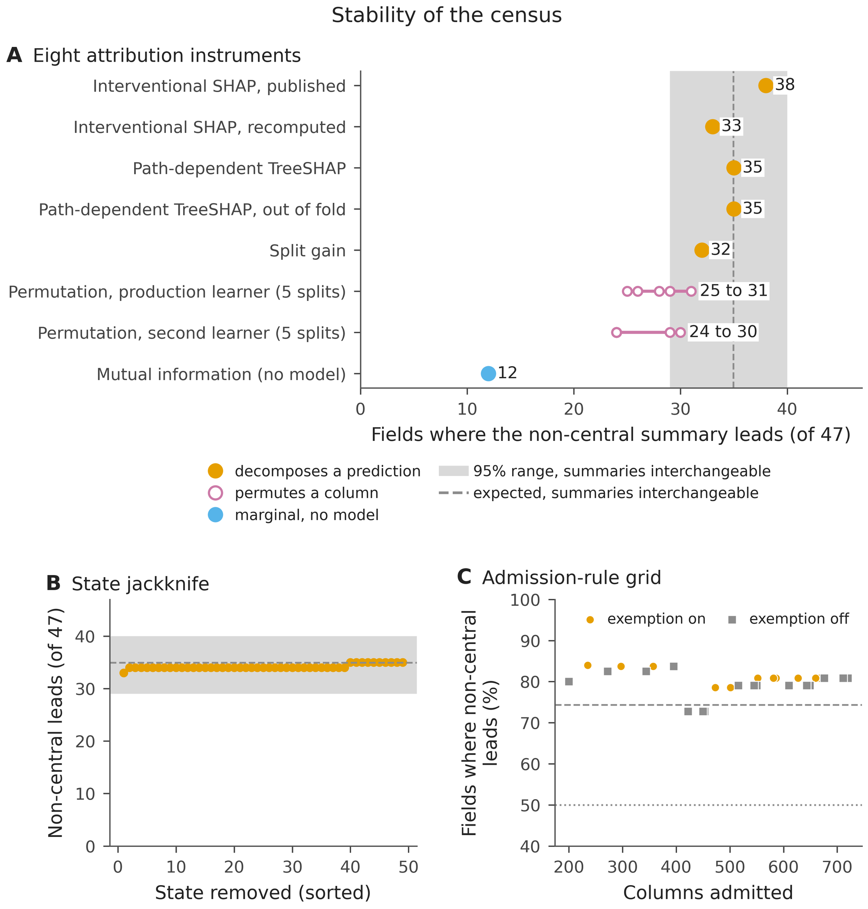
| Instrument | What it measures | Non-central leads |
|---|---|---|
| Interventional SHAP, main run | decomposes the prediction | 38 of 47 |
| Interventional SHAP, recomputed | decomposes the prediction | 33 of 47 |
| Path-dependent TreeSHAP | decomposes the prediction | 35 of 47 |
| Path-dependent TreeSHAP, out of fold | decomposes the prediction | 35 of 47 |
| Total split gain | counts tree use | 32 of 47 |
| Mutual information | marginal, no model | 12 of 47 |
| Permutation, production learner | loss when one column is broken | 25 to 31 of 47 |
| Permutation, second learner | loss when one column is broken | 24 to 30 of 47 |
What survives
Atmospheric lifetime broadly tracks the duration advantage
Tropospheric lifetime broadly tracks whether the model favours episodic duration over annual mean concentration (Spearman \(\rho\) = −0.42, one-sided permutation \(p\) = 0.077 across 13 species; Figure 7). Duration captured higher attribution for 5 of 6 short-lived species (lifetime under 2 days; median ratio 2.42), but for only 2 of 7 species persisting 2 days or longer (median ratio 0.46). The direction held at 7 of the 7 class boundaries tried, though the difference was significant at only 1. It held when each species was left out (correlations −0.55 to −0.30) and in 100% of 4,000 perturbations of the literature lifetimes. The evidence is consistent in direction and modest in strength. Formaldehyde, with a lifetime of hours, has the largest ratio. Ethane and ozone, which persist for weeks, are the clearest cases where the mean is the better description, while peroxyacetyl nitrate, long-lived aloft but short-lived near a warm surface, depends on which lifetime is used. Three species depart from the ordering: propane and the reanalysis fine particulate matter, longer-lived but favouring duration, and isoprene, short-lived with a ratio just below one (Table A3).
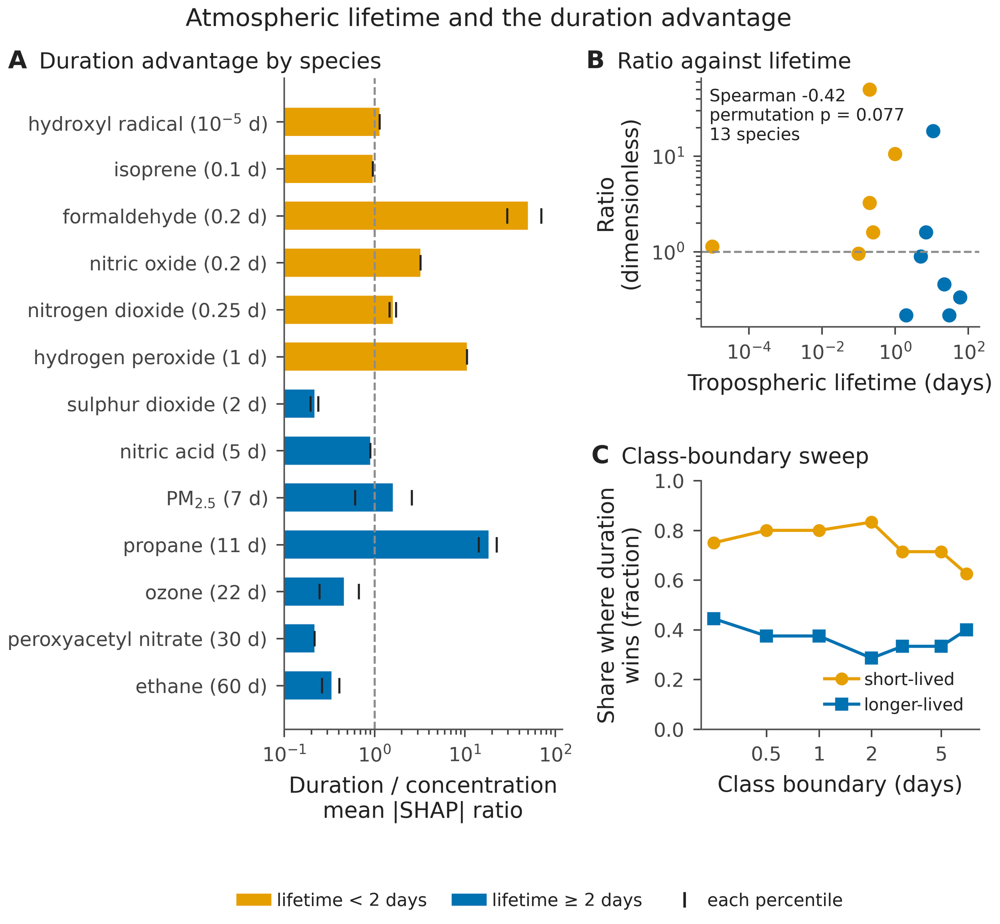
| Species | Lifetime (days) | Pairs | Median ratio | Duration favoured |
|---|---|---|---|---|
| Hydroxyl radical | 1\(\times 10^{-5}\) | 1 | 1.14 | yes |
| Isoprene | 0.1 | 1 | 0.96 | no |
| Formaldehyde | 0.2 | 2 | 49.97 | yes |
| Nitric oxide | 0.2 | 1 | 3.24 | yes |
| Nitrogen dioxide | 0.25 | 2 | 1.60 | yes |
| Hydrogen peroxide | 1 | 1 | 10.57 | yes |
| Sulphur dioxide | 2 | 2 | 0.22 | no |
| Nitric acid | 5 | 1 | 0.90 | no |
| Fine particulate matter (reanalysis) | 7 | 2 | 1.60 | yes |
| Propane | 11 | 2 | 18.39 | yes |
| Ozone | 22 | 2 | 0.46 | no |
| Peroxyacetyl nitrate | 30 | 1 | 0.22 | no |
| Ethane | 60 | 2 | 0.33 | no |
Turning points that survive noise
Of the 11 candidates, 10 passed the stability criterion (Figure 8A, Table A1). Three describe the moisture and night cooling. The minimum dew point, that of the county's driest cell, turned at 5.54 °C (95% interval 5.51 to 5.60). The nocturnal wet-bulb temperature turned at 7.41 °C (7.23 to 7.48) and the tail form of night cooling efficiency at 0.611 (0.608 to 0.613), each interval no wider than 1.2% of the variable's range. Each crossing lies near the middle of its variable's distribution, as expected for interventional attribution. Of the county-years, 52.7%, 38.5% and 54.8% lie above the dew-point, wet-bulb and night-cooling values, so each is a change of sign rather than a change of slope. Mean night-time surface temperature failed: its full-sample crossing at 5.20 °C lies outside its own bootstrap interval. Annual mean PM\(_{2.5}\) met the criterion only formally, with the widest interval, 33.8% of its range, and the full-sample value near its lower edge, and we do not interpret it.
The procedure does not invent turning points in noise. Run on attribution permuted against its predictor, 40 times for each of the 11 candidates, it located a crossing in some draws but passed the criterion in 0 of 440. On curves raised until no crossing existed, it passed in 0 (Figure 8B). Nor do the located values move much under plausible measurement error. Adding Gaussian noise of 1% of a predictor's standard deviation shifted the located value by a median of 0.06 interval widths, and 5% by 0.24. Only at 10% did the median shift reach 0.50 and the largest exceed one width (1.90; Figure 8C).
What a turning point is, and is not
A turning point is where a variable's contribution to the prediction changes sign around the model's average prediction (77.2 years). It describes the fitted model. It is not a threshold of harm, and the paper does not interpret it as a causal or physiological limit.
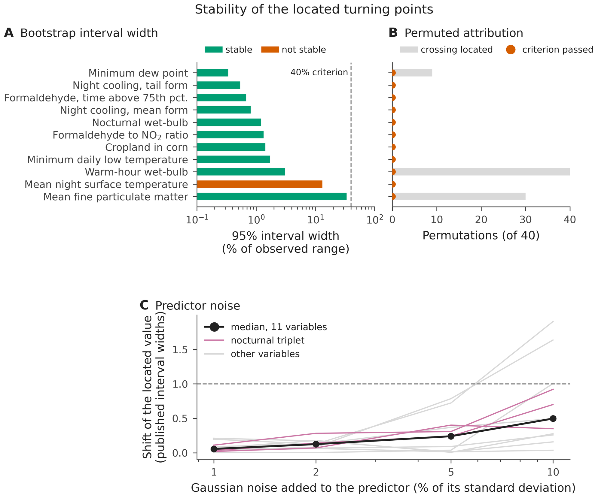
| Variable | Unit | Value | 95% interval | Width (%) | Stable |
|---|---|---|---|---|---|
| Minimum dew point | \(^{\circ}\)C | 5.54 | 5.51 to 5.60 | 0.3 | yes |
| NCE, tail form | dimensionless | 0.611 | 0.608 to 0.613 | 0.5 | yes |
| Formaldehyde, time above 75th percentile | % of year | 27.54 | 27.43 to 27.78 | 0.7 | yes |
| NCE, mean form | dimensionless | 0.492 | 0.490 to 0.498 | 0.8 | yes |
| Nocturnal wet-bulb temperature | \(^{\circ}\)C | 7.41 | 7.23 to 7.48 | 1.2 | yes |
| Formaldehyde to nitrogen dioxide ratio | dimensionless | 0.291 | 0.288 to 0.297 | 1.3 | yes |
| Cropland in corn | dimensionless | 0.012 | 0.009 to 0.016 | 1.4 | yes |
| Minimum daily minimum temperature | \(^{\circ}\)C | 4.46 | 4.28 to 4.68 | 1.7 | yes |
| Warm-hour wet-bulb temperature | \(^{\circ}\)C | 12.27 | 12.04 to 12.55 | 3.1 | yes |
| Mean night LST | \(^{\circ}\)C | 5.20 | 5.23 to 7.84 | 13.2 | no |
| Annual mean PM\(_{2.5}\) | 10 \(\mu\)g m\(^{-3}\) | 0.511 | 0.509 to 0.870 | 33.8 | yes |
Turning points that barely move with climate
A turning point that reflected regional climate would move when the country is cut in two; the three turning points of moisture and night cooling barely did (Figure 9). We relocated them independently on either side of the 100th meridian, with 3,782 attributed county-years in the drier west against 16,213 in the east. Relocated in this way, the turning points for minimum dew point (5.54 °C) and nocturnal wet-bulb temperature (7.41 °C) drifted by only 0.32 and 0.22 °C, and at the median longitude by 0.18 and 0.23 °C. For all three variables the shift was at most 1.7% of the observed range at the 100th meridian and 1.1% at the median longitude.
The test discriminates. Mean night-time surface temperature moved by 5.5% at the median longitude and 10.1% at the 100th meridian, and annual mean PM\(_{2.5}\) by 38.5% and 30.3%. The formaldehyde to nitrogen dioxide ratio moved by 24.8% at the median longitude but only 4.3% at the 100th meridian. The mean form of night cooling efficiency had no crossing west of the 100th meridian at all. Stability across the boundary is not unique to these three variables: minimum temperature, the formaldehyde duration and the corn fraction also moved little, while the variables above did not.
Two further results bound the reading. Variables describing one night are strongly related in their raw values, the minimum dew point and the minimum temperature correlating at +0.952, but their attributions are nearly independent (\(r\) = +0.022). A turning point in one is therefore not a copy of a turning point in another. And within quartiles of temperature the dew-point crossing appears in 2 of 4, the temperate middle, and not in the coldest or warmest quarter.
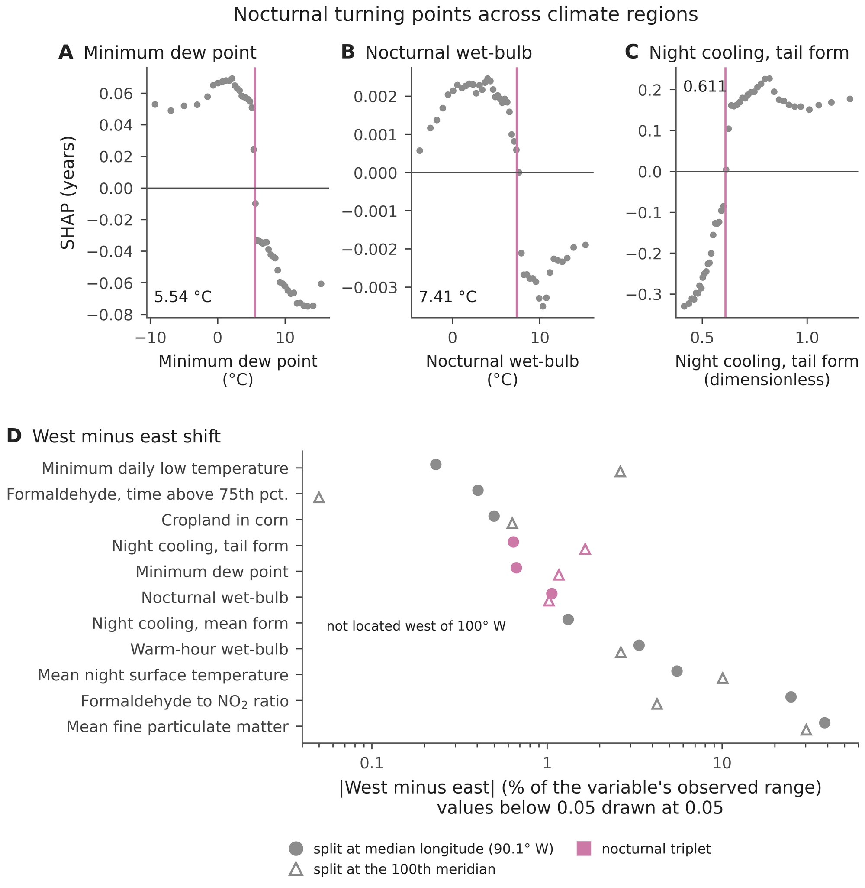
Where a physical model is blind
The model's error is geographically structured (Figure 10A). County mean residuals had a standard deviation of 1.38 years and were weakly but significantly clustered (Moran's \(I\) = 0.032, \(p\) = 0.010). Life expectancy was overpredicted by 3 years or more in 52 counties, most of them in the northern Plains (South Dakota, North Dakota and Montana), the interior West and Southwest, and Virginia.
The 314 socioeconomic columns that never entered the model predicted the county residual out of fold with \(R^{2}\) = 0.44, under folds grouped by state. The 581 environmental columns the model had used gave −0.17, no better than the mean (Figure 10B). The unmodelled residuals correlate with structural socioeconomic indicators (\(R^{2}\) = 0.44), indicating that what the physical layer misses reflects social determinants it never saw rather than environmental signal left in its own inputs. Over half of the residual variance remains unexplained. The result does not rest on the health-behaviour columns: without the County Health Rankings the socioeconomic columns gave \(R^{2}\) = 0.43, and the American Community Survey columns alone gave 0.43. All six pre-declared indicators were correlated with the residual in the expected direction, with absolute Spearman correlations from 0.19 to 0.35 (largest Holm-corrected \(p\) = 2.4 × 10−26; Figure 10C). The model overpredicts where poverty, unemployment and disability are high and underpredicts where income and education are high. The counties with the largest overprediction had median percentiles of 90 for poverty, 93 for unemployment and 17 for median household income. Removing the 154 counties with the largest residuals raised \(R^{2}\) to 0.761 and left 14 of the top 15 variables in place.
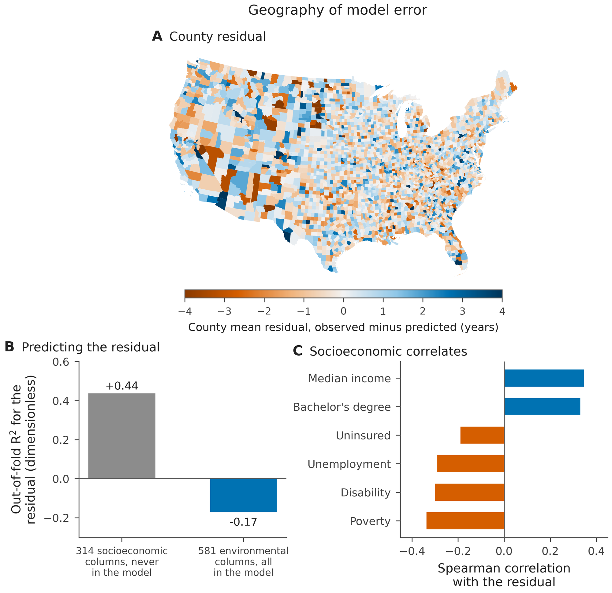
The data behind panel C (3,077 counties: mean out-of-fold residual and the six indicators) are in paper_final/derived/figure10c_residual_and_indicators.csv; script 33 reproduces every bar. The indicators are columns of the archived data table and never entered the model.
Conclusions
We have shown that machine learning attribution rankings in environmental health reflect the physical environment and also the summary statistic chosen for each field. Across 47 satellite and gridded fields, a model of United States county life expectancy credited a non-central description in 38, about as often as a random draw among each field's summaries would. Mutual information favoured the mean in 35, and models built from either kind of description predicted almost equally well. The ranking is therefore a property of one model in a Rashomon set, not a measurement of the information in the data. It should be reported with the summary statistic as a stated choice, an information measure beside it and a matched refit to test it. Beneath that multiplicity, physical structure remains. (1) Atmospheric lifetime broadly tracks which description of a pollutant the model prefers. (2) Three turning points, in minimum dew point, night-time wet-bulb temperature and night cooling, are stable under noise and shift by at most 1.7% of their range across the 100th meridian. (3) The model's remaining error correlates with socioeconomic disadvantage it never saw.
Recommendations and limitations
Four practices follow for studies that use attribution to name environmental determinants. Report the summary statistic of every field as a choice, and where the reduction can emit several, keep them. Pair every attribution ranking with a model-free information measure, so that a reader can see whether the ranking reflects the data or the model's use of it. Test a ranking's central claim with a matched refit, which contains no attribution and therefore cannot be an artefact of how credit is divided. And avoid loss-based permutation importance for comparing correlated descriptions of one field; where it is used, report it over several held-out splits.
Limitations
The unit of analysis is the county, so every association is ecological and none describes individuals; a county mean averages over cities, industry and farmland at once. The outcome is a small-area estimate that borrows strength across neighbouring counties and years and draws on county covariates, so part of the socioeconomic signal in the residual audit may enter through the outcome itself. Its uncertainty was not propagated into the fit, and only counties with all seventeen years were kept. Attribution describes a fitted model and is not a causal effect of the variable attributed.
The census rests on choices that are conventions rather than derivations. They are the grouping of columns into fields by their names, the division of summaries into central and non-central, and the treatment of the 47 fields as independent, although some are physically related. Its exchangeable reference assumes that every summary of a field is equally likely to lead, which is a null of no preference rather than a model of how trees choose among correlated columns. The comparison by mutual information uses the two summaries attribution selected, and it is marginal. It was estimated with a nearest-neighbour estimator over county-years that repeat each county seventeen times, so it measures association in the panel rather than between independent counties. The matched refit fixed the non-central summary by a declared order and drew it at random only 5 times. The satellite-only census rests on 18 fields.
Loss-based permutation importance was unstable across splits, as discussed. An earlier single-split run of it reported 23 of 47 from a model reloaded across incompatible library versions whose held-out \(R^{2}\) was far below zero. That run came from a corrupted model load and is excluded, and the five-split analysis replaces it.
The lifetime test rests on 13 species with lifetimes taken from the literature, and those lifetimes vary with season, altitude and oxidant levels. The species-level evidence is marginal, ozone and peroxyacetyl nitrate carry free-tropospheric lifetimes, and most species are model fields of the reanalysis rather than direct retrievals. The turning-point criterion uses two thresholds, 60% and 40%, that are our own conventions. The turning points are located on annual county summaries, not on exposures experienced by people, and as sign changes of interventional attribution they sit near the middle of each variable's distribution. The dew-point crossing appears in two of four temperature quartiles. The regional check was made at two boundaries only, with unequal halves at the 100th meridian and with one model attributing both halves, and several variables without a nocturnal reading also barely moved. Mean night-time surface temperature failed the criterion, and the PM\(_{2.5}\) values carry a constant factor of one tenth from extraction.
Temporal validation kept every county in training and therefore measured persistence rather than skill on new places; the skill on new places is the county-grouped and state-grouped figure. The residual analysis shows that socioeconomic variables predict the model's error, not that they cause it, and the residual's spatial clustering, though significant, is weak. Products with short records, including every Sentinel mission, did not meet the coverage requirement over 2003 to 2019 and are absent from the model. Finally, the study covers the contiguous United States, and whether the census and the turning points hold elsewhere is untested.
Reproduce
Get the code and data
git clone https://github.com/albertfaiz/how-long-not-how-much.git
cd how-long-not-how-much
# from Zenodo (https://doi.org/10.5281/zenodo.23353493):
# Final_ML_Ready_Dataset.csv.zip -> unzip at the repository root
# studyA_reference_frame.parquet -> results_studyA_20260801_004313/Run
conda env create -f environment.yml
conda activate satsdoh
bash run_all.sh # scripts 01 to 34, constants, figuresLibrary versions
The production model was fitted on the Juno cluster of the University of Texas at Dallas in Python 3.10.12. The analysis battery ran in Python 3.11.13 with XGBoost 3.0.2, SHAP 0.48.0, scikit-learn 1.7.1, NumPy 2.2.6, pandas 2.2.3, SciPy 1.16.1 and CatBoost 1.2.8. Every script is seeded. An earlier run under XGBoost 3.2.0 agreed except in the state hold-out \(R^2\) (0.504 against 0.509), Moran's \(I\) (0.035 against 0.032), the perturbation shifts (second decimal place) and the permutation counts (up to 6 fields in a split). No conclusion changed.
Built-in checks
Script 01 confirms the fitted model is identical across thread counts; script 10 reruns a script and compares its outputs by hash; script 32 checks the data files against each other cell by cell; build_paper_constants.py tests every sentence that describes a number in words against the regenerated value.
Glossary
Standard terms are given their usual meaning. Terms defined in this study are marked (this study).
- Atmospheric (tropospheric) lifetime
- Burden of a species divided by its removal rate; the e-folding time of its decay. Not the same as a half-life, which is \(\tau \ln 2\).
- Reanalysis
- A gridded reconstruction of past weather or composition from a numerical model corrected by observations (here ERA5 and the CAMS reanalysis).
- Chemical transport model
- A simulation of how gases and particles are emitted, carried, transformed and removed.
- Aerosol optical depth
- How much the particles in a vertical column dim sunlight; dimensionless.
- PM2.5
- Particulate matter with aerodynamic diameter below 2.5 micrometres.
- Land-surface temperature (LST)
- The radiative temperature of the ground surface retrieved from thermal infrared, distinct from air temperature.
- Dew point
- The temperature to which air must cool at constant pressure and moisture to become saturated; a measure of the water the air holds.
- Wet-bulb temperature
- The lowest temperature evaporation can cool a wet surface to; it combines heat and humidity.
- Duration, \(D\) (this study)
- Share of the year, in per cent, that a species spends above a fixed national percentile (equation 1).
- Night cooling efficiency, NCE
- Day-to-night drop in land-surface temperature as a fraction of the daytime value (equation 2); introduced in the earlier nocturnal study and used here in two constructions.
- Central and non-central summary (this study)
- Central: the mean or the median of a field. Non-central: a quantile, the minimum or maximum, or a measure of spread.
- Census (this study)
- The field-by-field comparison, over all 47 comparable fields, of the best central and the best non-central summary.
- Coefficient of determination, \(R^2\)
- Share of the variation in the outcome that the predictions reproduce, measured here on held-out counties.
- County-grouped cross-validation
- Folds formed so that no county appears in both training and test data.
- SHAP value
- The Shapley value of an input for one prediction; the values of all inputs add up to the prediction minus the average prediction.
- Interventional and path-dependent TreeSHAP
- Two ways of filling absent inputs: independently from a background sample, or by following the tree structure, which approximates conditioning on the present inputs.
- Permutation importance
- The loss of held-out skill when one column is shuffled while all others stay intact.
- Mutual information
- Reduction in uncertainty (entropy) about one variable from knowing another; zero for independent variables; here in nats.
- Predictive multiplicity and the Rashomon set
- Many models fit the same data almost equally well yet attribute differently; the set of such near-optimal models is the Rashomon set (Breiman, 2001; Marx et al., 2020; Fisher et al., 2019).
- Spearman rank correlation, \(\rho\)
- Pearson correlation of the ranks; measures a monotone association and is less sensitive to extreme values than the Pearson correlation.
- Permutation test
- A \(p\) value from the share of random relabellings that give a statistic at least as extreme as the observed one.
- Bootstrap
- Resampling the observations with replacement to measure how much an estimate would vary.
- Sign test
- A test of whether one of two outcomes occurs more often than half the time, against a binomial distribution with probability one half.
- Poisson-binomial distribution
- The distribution of the number of successes in independent trials with different probabilities.
- Moran's \(I\)
- A measure of spatial autocorrelation: positive when neighbouring values are alike.
- Holm procedure
- A step-down correction of \(p\) values for testing several hypotheses at once.
- Turning point (this study)
- The value of a variable at which its SHAP contribution changes sign; a property of the fitted model.
Cite
@article{Ahmad2026multiplicity,
author = {Ahmad, Faiz and Lary, David J. and Ruwali, Shisir and Shrestha, Samyak and
Aker, Adam and Waczak, John and Niloy, Md Shaid Hasan and Patra, Rittik and
Awoyinka, Tunde Dare},
title = {Predictive Multiplicity in Environmental Health: Information Theory Exposes
How Summary Statistics Shape Machine Learning Attribution},
journal = {Sensors},
year = {2026},
note = {Submitted}
}Data: Zenodo, https://doi.org/10.5281/zenodo.23353493. Code: MIT licence. Data: CC BY 4.0.
This work builds on
- Ahmad, F. et al. Nighttime Thermal Patterns and County Life Expectancy. Remote Sensing 2026, 18, 2330. doi:10.3390/rs18142330
- Shrestha, S. et al. The External Exposome and Life Expectancy: Formaldehyde as a Leading Predictor in U.S. Counties. Air 2026, 4, 10. doi:10.3390/air4020010
- Shrestha, S. et al. Atmospheric Exposures and Cardiovascular Mortality in United States Counties. AI Sensors 2026, 2, 8. doi:10.3390/aisens2030008
- Ruwali, S. et al. Estimating Life Expectancy in the U.S.: Identifying Environmental Determinants and Disparities (2003 to 2019). Sensors 2026, 26, 6478. doi:10.3390/s26206478